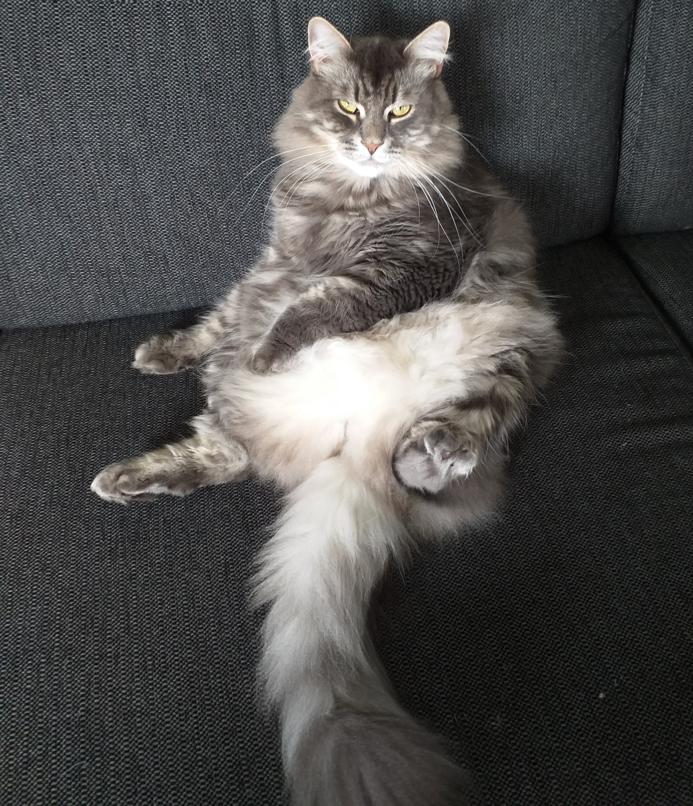
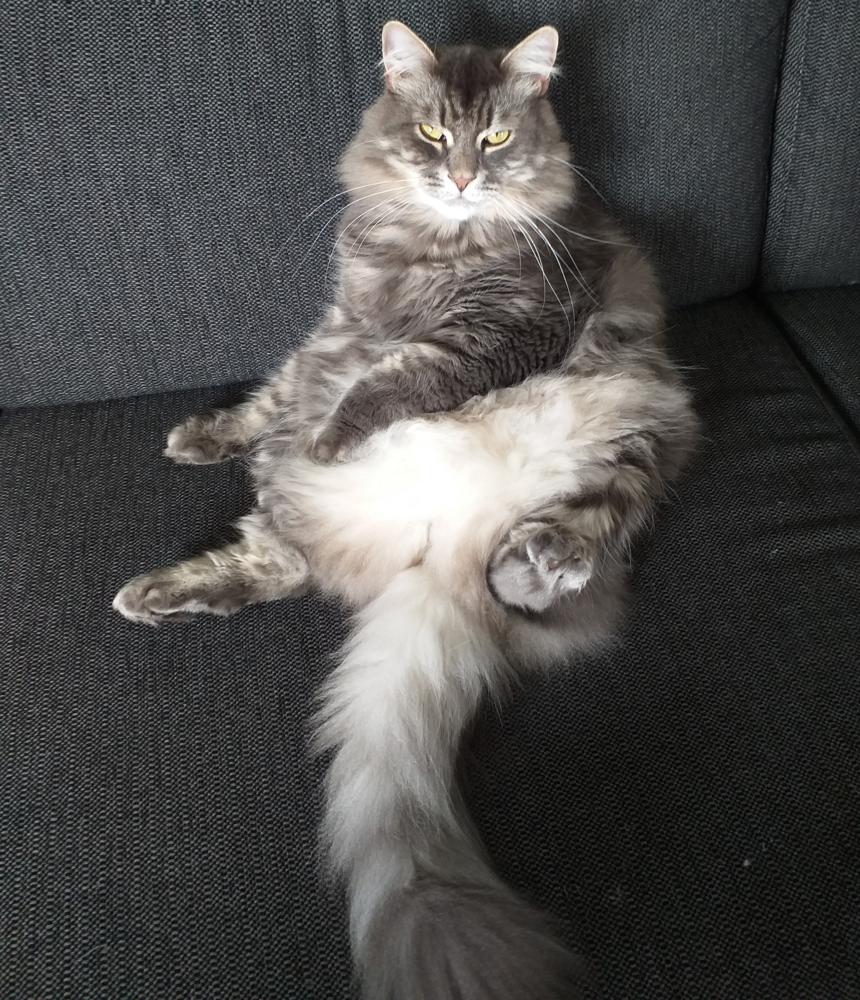

Hej jeg hedder Oliver
jeg er 14 år
jeg blev født D.19-11-2007
Jeg bor ved min mor for det meste fordi min mor og far er skilt
når jeg er hjemme
hos min mor bor jeg i Sønderborg men når jeg bor hjemme hos min far bor jeg i Risskov
Jeg kan godt lide at spille computer jeg spiller mest Roblox (der er et link til det her nede under)
Visit robloxhjemme hos min mor har jeg 2 katte de hedder Buffy og Yulika.
Buffy er en hankat og
Yulika er en hunkat
Her er et billede af mig, Yulika og Buffy

 

Den første dag jeg var i praktik var sjov og hyggeligt og jeg lærte at programere det basale.
jeg glæder mig
til imogen til at jeg skal prøve noget mere imorgen

Den anden dag jeg var i praktik var det også sjovt og hyggeligt men jeg lærte at lave mit eget spil og lærte
backend
det var svære at lære ind det den første dag men det var også sjovt og mig og Brian havde det sjovt
med mit spil og nogle lyde den kunne sige.
Men Brian sagde til alle at de skulle komme ind og prøve mit spil
og de syntes det var et godt spil og det var godt lavet.
Jeg har lært en masse om hvordan det er at være programør jeg har lært fx. HTML, JS (JS står også for
JavaScript), CSS, og CS.
Det kunne måske godt være noget jeg gider når jeg skal finde et job.
i like realy shity games💩